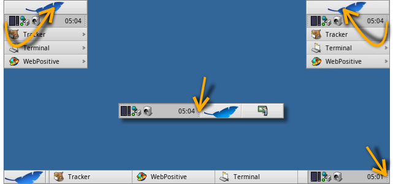

Українська
Українська Català
Català Deutsch
Deutsch English
English Español
Español Français
Français Italiano
Italiano Magyar
Magyar Polski
Polski Português
Português Português (Brazil)
Português (Brazil) Română
Română Slovenčina
Slovenčina Suomi
Suomi Svenska
Svenska 中文 ［中文］
中文 ［中文］ Русский
Русский 日本語
日本語| Зміст |
|
Меню Deskbar Трей Список запущених команд |
Панель задач - Deskbar
Deskbar - це маленька панель, що по замовчуванню розташована у верхньому кутку екрана . Вона є аналогом меню Пуск у Віндовс і містить меню з якого ви можете запустити необхідні додатки, настройки, а також трей з годинником і список запущених додатків внизу.
Ви можете перемістити Deskbar до будь-якого кута або розмістити як панель вздовж верхньої або нижньої межі екрану захопивши за шорстку зону в районі трея і drag&drop потягнути на нову позицію. Ви також можете згорнути його до компактного вигляду посунувши за шорстку зону в напрямку меню Deskbar.
By gripping the other knobbly widget of the tray, you can change the width of the Deskbar by dragging the mouse left or right:

A wider Deskbar allows for more icons in the tray on a single row. It also truncates longer application names in the list of running programs less often, especially if you use larger icons.
 Меню Deskbar
Меню Deskbar
Меню відкриється коли клікнути по верху Deskbar'a:

Про цю систему (About This System...) - Показує базову інформацію про систему, ліцензії і подяки проекту Haiku.
Find... - Відкприває пошуковий діалог Query.
Show Replicants - Показує/ховає маленький віджет Replicant переміщує його, видаляє , дає доступ до контекстного меню.
Змонтувати (Mount) - Надає ті самі опції що і при правокліку по робочому столу (дивись Mounting Volumes).
Настройки Deskbar ... - Відкриває панель конфігурації Deskbar (див. нижче).
Завершення роботи (Shutdown) - Пропонує опції або .
Недавні додатки, документи, папки - Список додатків, документів, папок, котрі відкривалися недавно (дивись below).
Applications, Demos, Deskbar applets, Preferences - List of installed applications, demos, applets and preferences.
You can add links to other programs (or any folder, document, query etc.) by putting them into ~/config/settings/deskbar/menu/.
Настройки Deskbar

The Deskbar preference panel is devided into three sections.
Applications (Програми)
The following settings don't apply to your installed applications, but to the behavior and visuals of the list of running applications.
| Sorts the list of running programs alphabetically. | ||
| Even if you sort alphabetically, the Tracker entry always stays first in the list. | ||
| Provides a small widget to show/hide all windows of a program directly under its entry in the Deskbar. | ||
| Newly launched programs have their windows automatically expanded under their entry in the Deskbar. | ||
| Removes the text labels of running applications. | ||
| Adjusts the icon size of running applications. |
Menu
While the first couple of menu items of the Deskbar are fixed, you can customized the ones below .
Here you can set the number of recent documents, folders and applications that are shown in their menu in the Deskbar, or if you want to see them at all.
The button opens the folder ~/config/settings/deskbar/menu/. In it you'll find the files and folders that appear in the Deskbar, by default these are , , , and .
You can delete or add entries like links to applications, documents or even queries by simply copying/deleting them to/from this folder.
Programs installed from a package automatically put an entry into the Deskbar. Depending on the number of packages you have installed, this can become a bit crowded. If you prefer to have total control, and only want to see applications you link there yourself (possibly in categorizing sub-folders), here's how to do it:
You create a link of the menu folder in ~/config/settings/deskbar/ and rename to menu_entries. From Terminal that is achieved with:
ln -s ~/config/settings/deskbar/menu ~/config/settings/deskbar/menu_entries
Window
Finally, the preferences for the Deskbar window.
| The Deskbar always stays above all other windows. | ||
| The Deskbar pops to the front if the mouse pointer touches it. | ||
| The Deskbar is reduced to only a few pixels and only pops up if the mouse pointer touches them. |
Трей

Окрім іншого в треї розташований годинник. Лівоклік мишки змінює показ часу на дату і навпаки.Правоклік по ньому викликає контекстне меню, з якого можна запустити настройку часу, дати і часової зони.
Будь-яка програма може встановити іконку в трей для забезпечення швидкого доступу. Почтовий клієнт, наприклад, показує іншу іконку, коли є непрочитані листи і пропонує контекстне меню.Іншим прикладом є Інспектор процесів (ProcessController) що використовує іконку в треї, яка показує нагрузку процесора, використання пам'яті а також пропонує контекстне меню.
Список запущених додатків

You can change to a specific running application by clicking on its entry in the Deskbar and choosing (one of) its windows from the submenu. By right-clicking you can windows or and with them the entire application.
A SHIFT CTRL click on an application hides all its windows, a CTRL click shows them again.
Якщо Ви активували відображення експандера в настройках Deskbar, то зможете згортати/розгортати список вікон додатку.
Перед кожним вікном додатку знаходиться іконка, що показує стан вікна. Світла іконка означає що вікно розгорнуте, темна - згорнуте. Три полоски перед іконкою означають, що вікно знаходиться на іншому робочому столі.